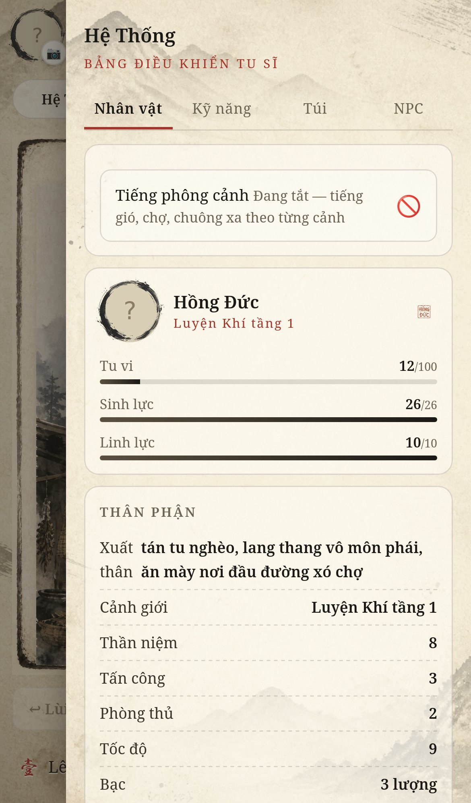
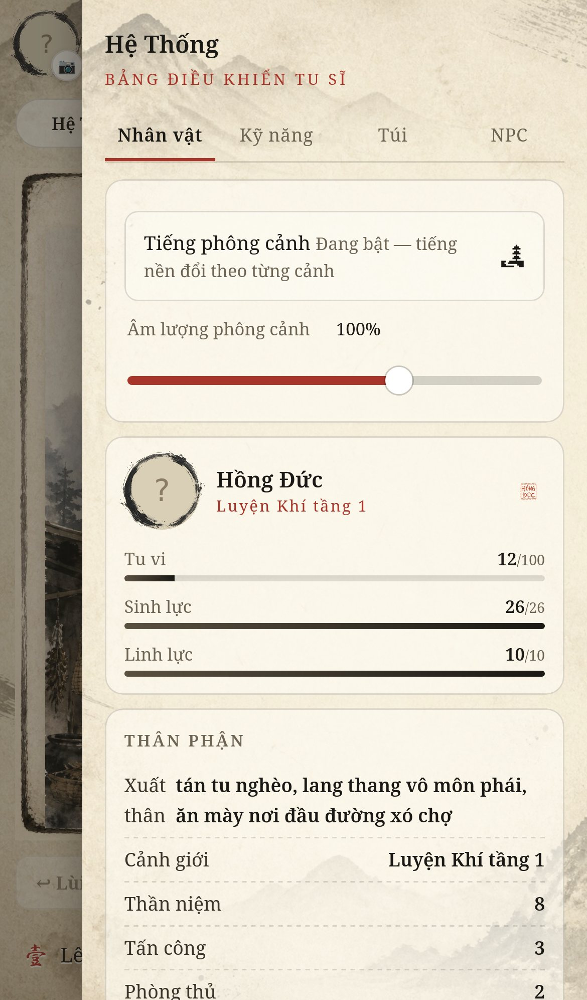
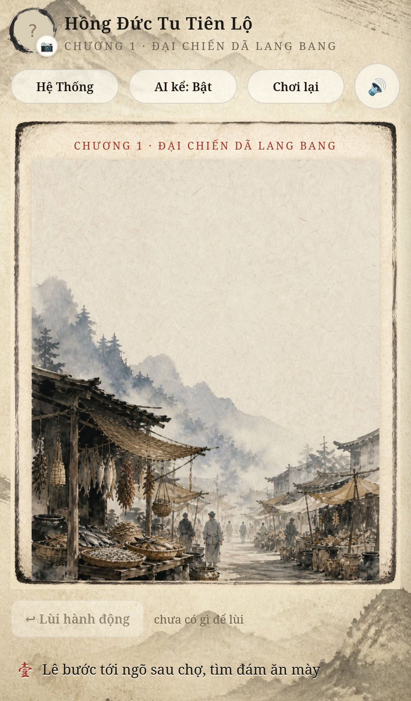

Mỗi bối cảnh có tiếng nền riêng, dựng bằng code, không thêm file nào
Vào game nghe thửAnh đang đăng công khai trên GitHub Pages. Nhạc nền vướng chỗ nguồn nhạc: lấy nhạc không rõ nguồn là rủi ro thật. Còn tiếng theo cảnh thì không có vấn đề đó, vì sinh ra bằng sóng âm ngay trong máy — không có file nào để truy nguyên.
Nó cũng hợp với game chữ hơn. Nhạc nền dở hoặc lặp một đoạn ngắn sẽ khiến người chơi tắt tiếng sau vài phút — rồi mất luôn tiếng bấm vừa sửa xong. Tiếng cảnh thì thưa và nhẹ, nghe như tiếng phòng, không tranh chỗ với chữ đang đọc.
Tôi đọc tên 68 ảnh và chia theo nghĩa, không chia máy móc:
| Nhóm | Tiếng | Cảnh |
|---|---|---|
| chợ | nhiễu dày, âm sắc cao | 3 |
| trận | nhiễu mạnh, dồn dập | 3 |
| núi | gió lọc, thỉnh thoảng gió qua khe đá | 3 |
| sân tập | nhiễu vừa, khô | 6 |
| vườn thuốc | lá động, thưa | 5 |
| miếu | trầm, chuông chùa xa | 2 |
| đêm | trầm, tiếng dế | 3 |
| làng | rất nhẹ, tiếng xa | 11 |
| tĩnh | gần như im | còn lại |
Ảnh nhân vật và vật (26 ảnh) không phải nơi chốn — chúng là cận cảnh giữa chừng. Nên chúng không cắt tiếng nền đang chạy, chỉ thêm một nốt trầm ngắn làm điểm nhấn.
Tiếng nền là thứ người chơi phải tự chọn. Bật sẵn thì ai không thích cũng phải đi tìm nút tắt, và trên iPhone tiếng tự phát còn bị chặn cho tới khi có cú chạm.
Nút nằm trong bảng Hệ Thống, tab Nhân vật:


Đo bằng analyser móc song song vào loa chung, trên WebKit giả lập iPhone 13:
| Phép đo | Kết quả |
|---|---|
| Tiếng nền chín nhóm | 0.023 – 0.043 |
| Tiếng bấm (để so) | 0.333 |
| Bấm 8 lần chồng lên nền | 0.349 — không vượt 1.0 |
| Tắt phông cảnh | im hẳn (0) |
| Tắt tiếng chính | phông cảnh im theo (0) |
| Bốn tiếng cũ | vẫn kêu, không đổi |
| Đi qua 6 cảnh — số nhóm khác nhau | 4 (tiếng có đổi) |
| Tải lại trang khi đang bật | chờ (0), chạm 1 cái → 0.035 |
| Chơi lại | dọn sạch, về màn tạo nhân vật |

Tôi không nghe được những tiếng này. Tôi chỉ đo được mức tín hiệu. Nên tôi biết chúng có phát, đúng mức, không méo, không vượt 1.0 — nhưng tôi không biết chúng nghe có hay không.
Cái đó phải do anh quyết. Nếu nghe như tiếng ồn vô nghĩa, hoặc khó chịu, nói tôi biết nhóm nào — tôi chỉnh âm sắc hoặc bỏ hẳn nhóm đó. Nếu thấy hay thì giữ nguyên.
muc của doiCanhTiengnhomCanhtaoThuaBật bằng: bảng Hệ Thống → tab Nhân vật → "Tiếng phông cảnh".